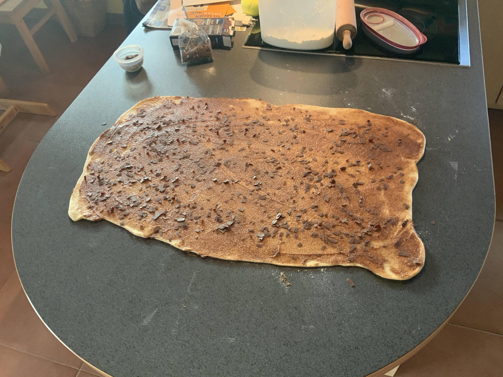
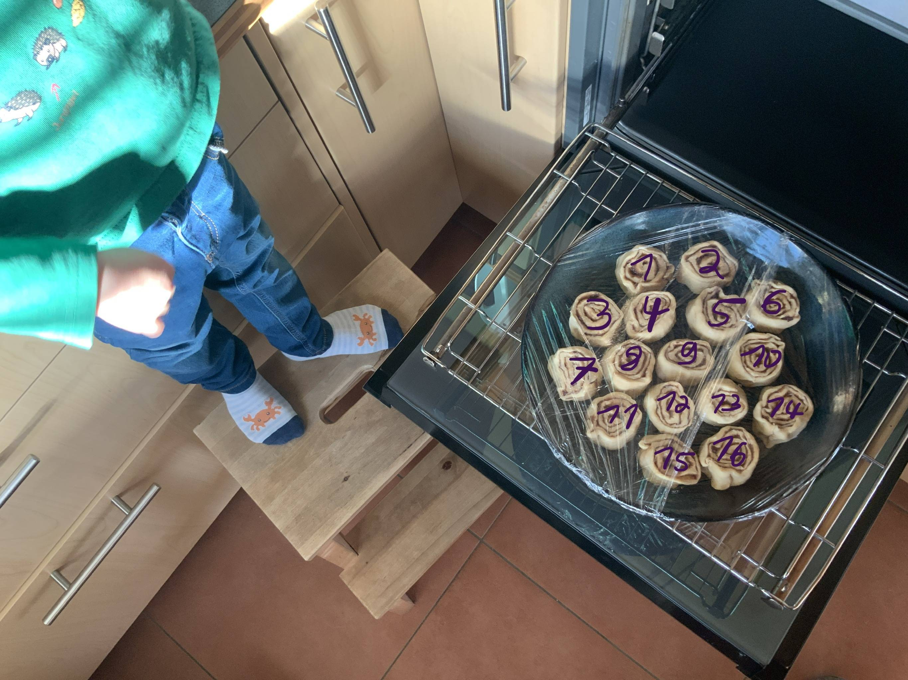
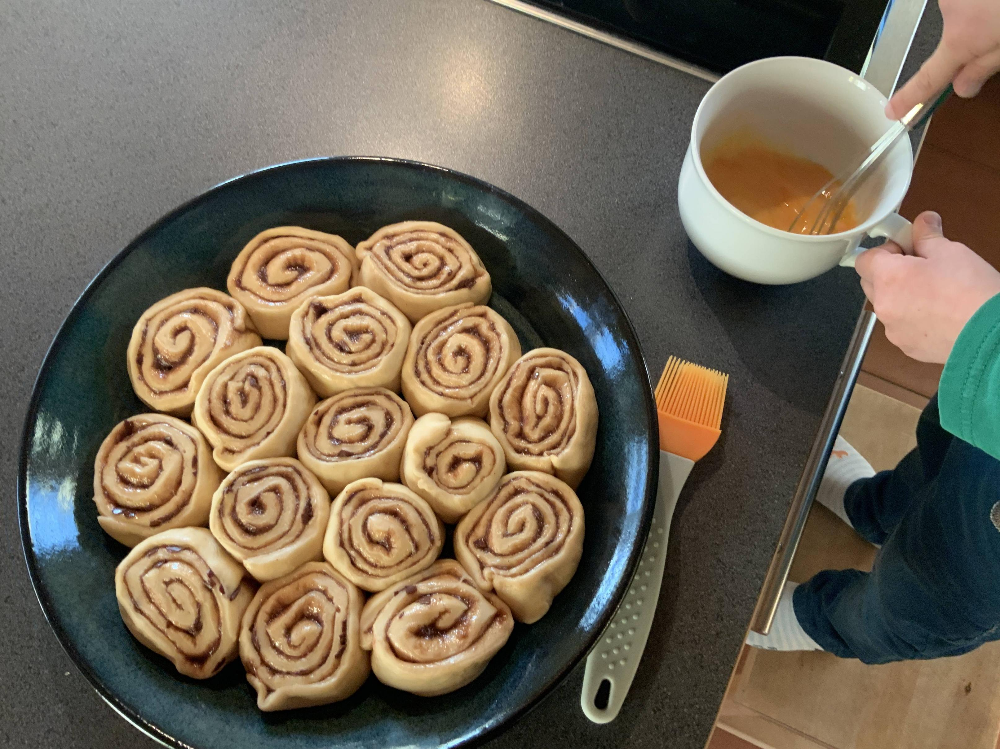
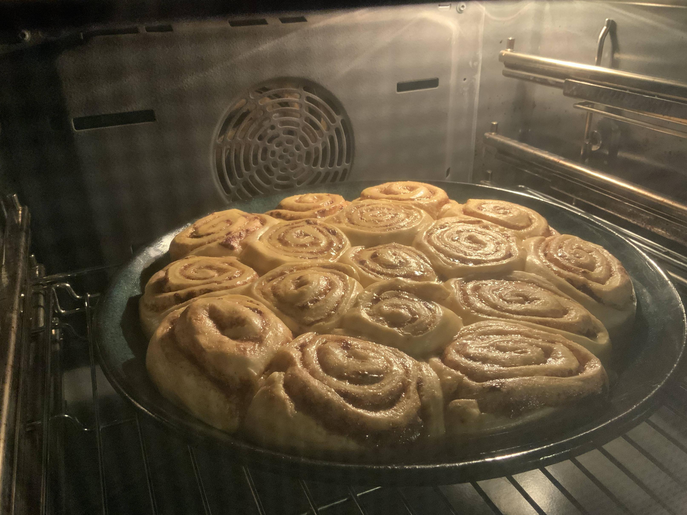
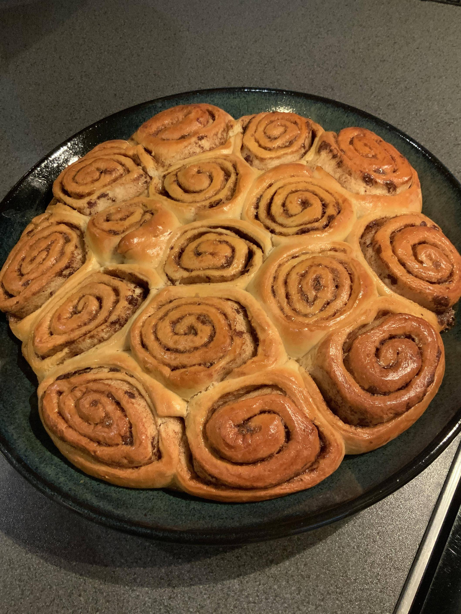

Schoko-Schnecken
Hefeteig
200g Milch handwarm ½ Pk Vanillezucker 60g Zucker 22g Hefe verrühren 1 Ei Größe L dazu in der Teigknetmaschine 120g Weizenmehl 405 380g Dinkelmehl 630 dazu und wenn es ein fester Teig ist 5g Salz zugeben und 60g Butter kalt in Streifen schneiden und 5-10 Minuten einketen (-> Fenstertest) danach Teig 30-60 Minuten ruhen/gehen lassen
Füllung
in der Zwischenzeit 10g brauner Zucker 30g Rohrohrzucker 50g weißer Zucker 100g Butter ½ Pk Vanillezucker 2 Teelöffel Zimt 5 Teelöffel Kaba verkneten zu einer cremigen Masse
Hefeteig ausrollen und mit der Füllung bestreichen Nach Belieben noch Raspel Schokolade darauf verteilen

einrollen, in 16 Stücke schneiden und in Kuchenform setzen:
Mit Frischhaltefolie abdecken und weitere ca. 30 Minuten gehen lassen, dann mit Eimilch abstreichen:
Backofen auf 220°Celsius Ober-/Unterhitze vorheizen. In den Ofen und dabei auf 180° reduzieren. Nach 10 Minuten auf 160° reduzien:
weitere 25 Minuten backen oder bis eine Kerntemperatur von 92° erreicht ist. Fertig: